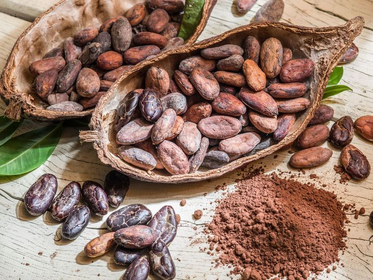

Buerre de Cacao

Masse de Cacao

Tourteau de CaCao

Nos services
Achat et collecte de fèves de cacao et café directement auprès des producteurs.
Commercialisation des résidus (coques, nib, brisures de cacao, etc.).
Commercialisation des dérivées (Tourteau de Cacao, beurre de cacao, masse de cacao)
Stockage et traitement des produits dans le respect des normes de conservation.
Commercialisation et distribution à l'échelle locale et internationale.
Conseil et accompagnement pour l'optimisation de la production et de la qualité.
Nos Produits

Fèves de Cacao
Les fèves de cacao sont les graines du cacaoyer (*Theobroma cacao*), un arbre tropical originaire d'Amérique du Sud. Elles constituent l'ingrédient de base du chocolat et sont également utilisées pour produire la poudre de cacao, le beurre de cacao et la masse de cacao.
Voir PlusBrisures de cacao
La brisure de cacao est un sous-produit obtenu lors du concassage des fèves de cacao après la torréfaction. Elle se présente sous forme de petits morceaux de fèves concassées, avant d'être transformée en pâte de cacao ou en chocolat.
Voir Plus
Masse de Cacao
Également appelée liqueur de cacao, la masse de cacao est une pâte pure obtenue par le broyage des fèves de cacao fermentées et torréfiées. Ce produit 100 % cacao conserve à la fois les solides et le beurre de cacao, lui donnant une texture lisse et une saveur intense.
Voir Plus
Poudre de Cacao
La poudre de cacao est obtenue après l’extraction du beurre de cacao des fèves. Une fois la matière grasse partiellement retirée, le résidu sec est finement broyé pour obtenir une poudre aromatique et nutritive, largement utilisée dans l’industrie agroalimentaire.
Voir Plus
Beurre de Cacao
Le beurre de cacao est la matière grasse extraite des fèves de cacao. Il est principalement utilisé dans la fabrication du chocolat, ainsi que dans l’industrie cosmétique pour ses propriétés hydratantes et nourrissantes.
Voir Plus
Tourteau de Cacao
Le tourteau de cacao est un sous-produit issu de l'extraction du beurre de cacao à partir des fèves. Une fois l’huile retirée, la matière restante est broyée pour former un tourteau, riche en fibres et en protéines, utilisé notamment dans l’alimentation animale et la fabrication d’engrais organiques.
Voir Plus